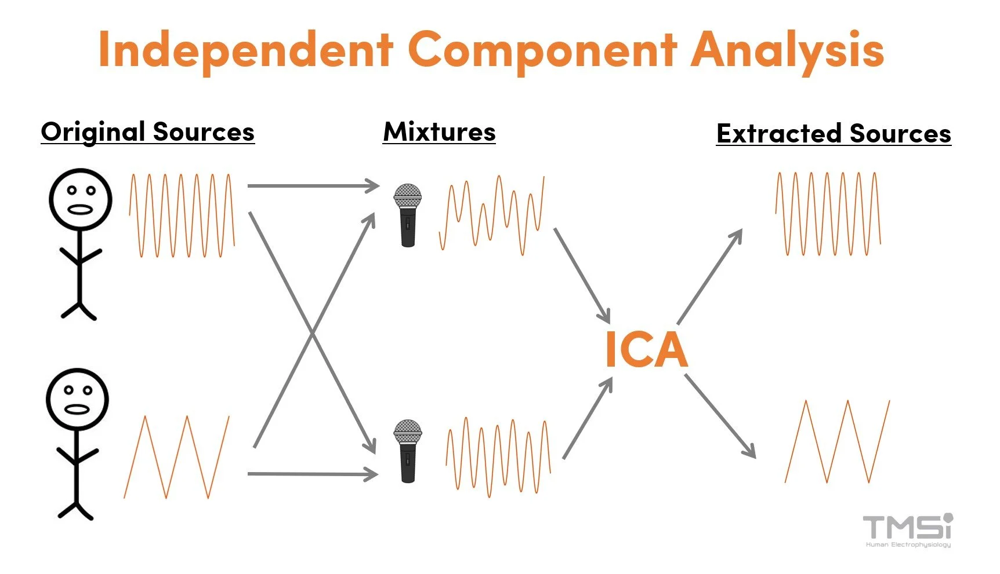

Independent Component Analysis (ICA)
From PCA to ICA: Why Decorrelation Is Not Enough
PCA finds an orthogonal basis that decorrelates the data — after projection, all pairwise covariances are zero. But zero covariance does not imply statistical independence in general.
Covariance measures only linear relationships (second-order statistics). Two variables can have zero covariance and still be highly dependent through nonlinear structure.
\[\text{independent} \implies \text{uncorrelated}, \quad \text{but} \quad \text{uncorrelated} \not\Rightarrow \text{independent}\]
The one exception: If the data is jointly Gaussian, then uncorrelated does imply independent. This is because a multivariate Gaussian is fully characterized by its mean and covariance — there are no higher-order dependencies. So PCA is sufficient for Gaussian data, but fails for everything else.
ICA goes further: it finds directions along which the projected data is maximally statistically independent, not just uncorrelated.

Source: images.squarespace-cdn.com
{kind=link}
The Generative Model
ICA assumes the observed data \(x\) is a linear mixture of hidden independent source signals \(s\):
\[x = As\]
where: - \(x \in \mathbb{R}^d\) — observed signal (what you measure) - \(s \in \mathbb{R}^d\) — independent source signals (what you want to recover) - \(A \in \mathbb{R}^{d \times d}\) — unknown mixing matrix
The goal is to estimate the unmixing matrix \(W = A^{-1}\) such that:
\[y = Wx \approx s\]
This is called blind source separation (BSS) — “blind” because both \(A\) and \(s\) are unknown.
Cocktail party example: Multiple speakers talk simultaneously. Each microphone records a mixture of all voices. ICA recovers the individual voices from the microphone recordings.
Key Assumptions
ICA requires two assumptions:
The sources are statistically independent: knowing the value of one source tells you nothing about the others \[p(s_1, s_2, \ldots, s_d) = \prod_i p_i(s_i)\]
At most one source is Gaussian: if two or more sources are Gaussian, they cannot be separated — their mixture is also Gaussian, and any rotation of a Gaussian is still Gaussian, so the unmixing direction is unidentifiable
The mixing is linear and instantaneous (the matrix \(A\) is constant)
How to Find Independent Components: The CLT Argument
The core insight comes from the Central Limit Theorem (CLT):
A sum (linear mixture) of independent random variables tends to be more Gaussian than any of the individual variables.
Therefore, the logic is reversed:
\[\text{Mixing} \longrightarrow \text{more Gaussian}\] \[\text{Unmixing} \longrightarrow \text{less Gaussian (more non-Gaussian)}\]
\[\boxed{\text{Most non-Gaussian projection} \approx \text{original source signal}}\]
So instead of directly optimizing for statistical independence (which is hard to compute), ICA uses non-Gaussianity as a proxy for independence, and maximizes it.
ICA as an Optimization Problem
We want to find a weight vector \(w\) such that the projection \(y = w^\top x\) is maximally non-Gaussian. This gives us one independent component. Repeating for all components gives the full unmixing matrix \(W\):
\[\hat{W} = \arg\max_W \; \mathcal{F}_{\text{non-Gaussian}}(Wx) \quad \text{subject to } WW^\top = I\]
⚠️ When ICA’s model assumptions hold (independent, non-Gaussian sources, linear mixing), ICA does recover the true sources — up to permutation and scaling (see Ambiguities below). The reason ICA is an optimization problem (unlike PCA’s closed-form eigendecomposition) is that statistical independence involves all orders of statistics, not just second-order covariance. Non-Gaussianity is an approximation we optimize iteratively. If the model assumptions are violated, the result will be the “most non-Gaussian” directions, which are the best available approximation to independence.
Measuring Non-Gaussianity
1. Kurtosis
Kurtosis is the normalized 4th central moment:
\[\text{Kurt}(y) = \mathbb{E}[y^4] - 3(\mathbb{E}[y^2])^2\]
For a Gaussian: \(\text{Kurt}(y) = 0\)
| Distribution | Kurtosis | Example |
|---|---|---|
| Gaussian | \(= 0\) | noise |
| Super-Gaussian | \(> 0\) | sparse signals, spiky (e.g., speech) |
| Sub-Gaussian | \(< 0\) | uniform distributions, flat |
Optimization: maximize \(|\text{Kurt}(w^\top x)|\)
Drawback: kurtosis is sensitive to outliers (it weights the tails heavily via the 4th power), making it unstable in practice.
2. Negentropy
Negentropy is based on differential entropy \(H\):
\[J(y) = H(y_{\text{Gaussian}}) - H(y) \geq 0\]
where \(y_{\text{Gaussian}}\) is a Gaussian with the same mean and variance as \(y\).
The Gaussian distribution has maximum entropy among all distributions with fixed variance. So negentropy measures how far a distribution is from Gaussian — it is always \(\geq 0\) and equals zero only for a Gaussian.
Optimization: maximize \(J(w^\top x)\)
Negentropy is more robust than kurtosis but hard to compute exactly. In practice, it is approximated using nonlinear functions:
\[J(y) \approx \left[\mathbb{E}\{G(y)\} - \mathbb{E}\{G(\nu)\}\right]^2\]
where \(\nu \sim \mathcal{N}(0,1)\) and \(G\) is a nonlinear function such as:
\[G(u) = \log \cosh(u) \quad \text{or} \quad G(u) = -e^{-u^2/2}\]
Typical pipeline
PCA whitening → ICA rotation
PCA is often used as a preprocessing step for ICA: it decorrelates and normalizes variance (whitening), leaving only the rotational degrees of freedom for ICA to solve.
Limitations
- Only handles linear mixing — nonlinear mixtures require other methods
- Cannot separate Gaussian sources — the Gaussian distribution is rotationally symmetric, so all rotations look the same
- Results may be local optima — the optimization landscape for non-Gaussianity is non-convex